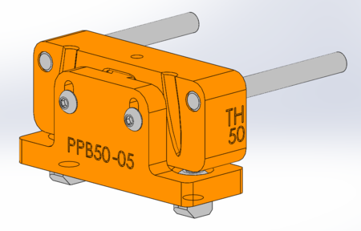
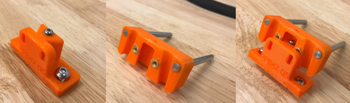
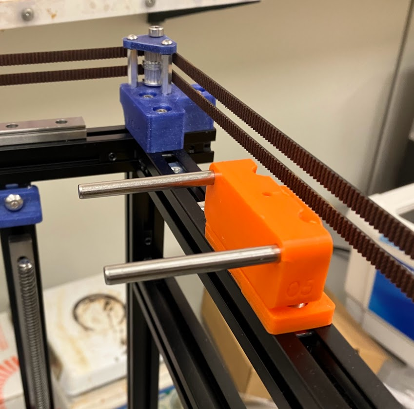
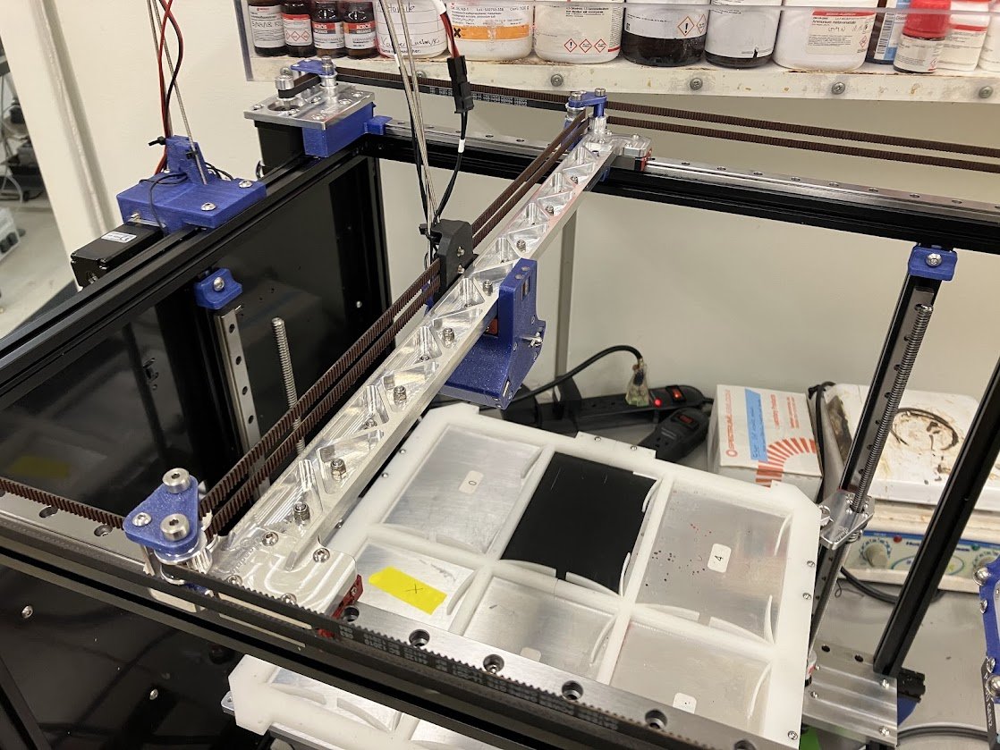
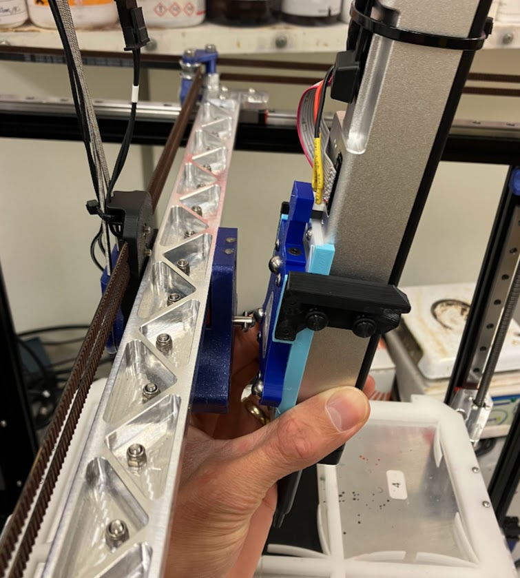
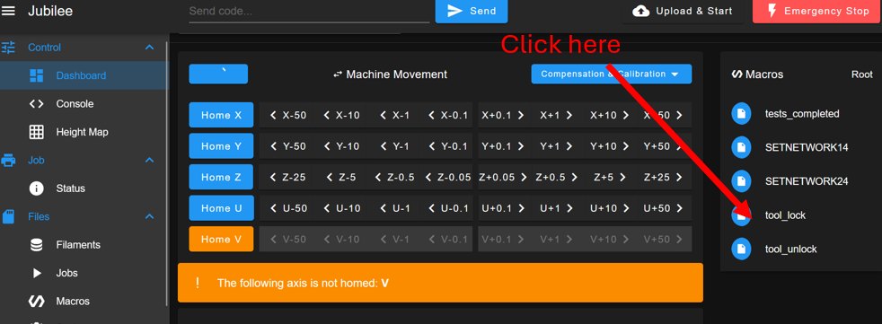
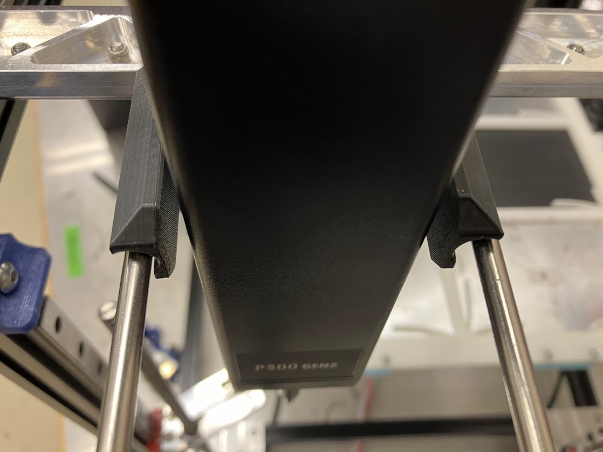
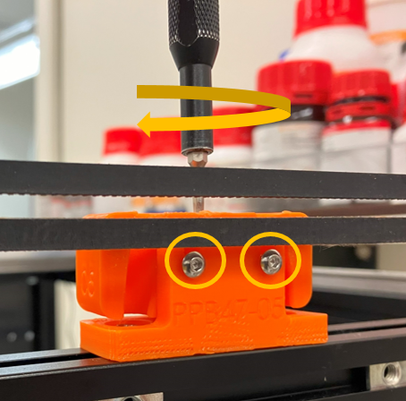

Setting parking post positions
Tool parking posts keep tools accessible but out of the way when they are not in use. Correctly setting parking post positions is critical to smooth, reliable tool changes with your Jubilee. The process of setting parking post positions involves determining and recording the X and Y positions of the parked tool, adjusting the Z height of the parking post, and configuring the appropriate tool change macro files.
Skills and capabilities needed
Interacting with Jubilee over Duet web control
Editing gcode configuration files
Selecting an appropriate parking post for your tool
{kind=link}

A rendering of an assembled Jubilee tool parking post. Image from https://jubilee3d.com/index.php?title=Tools.
Jubilee tool parking posts come in various sizes to accommodate different tool sizes. If you are building an existing tool design from the science-jubilee project, the tool documentation should provide the correct parking post STL files. If you are building a new tool, you will need to either design your tool wing spacing around an existing parking post width, or modify the parking post design to fit your tool. Parking post assembly instructions are available at the main Jubilee project repository. More parking post information can be found on the Jubilee project wiki.
{kind=link}

Left: Parking post base. Middle: Parking post tool holder. Right: Base and tool holder assemble like this.
You will need
An assembled, configured Jubilee
A new tool to be parked
An appropriate parking post for your tool, assembled (see above)
1.5mm and 2.5mm hex keys, either in an L-key or screwdriver format (exposed hex key shaft is required to reach recessed fasteners)
Placing the parking post on Jubilee
Fasten your parking post loosely to the front top extrusion piece of your Jubilee. Use the T-nuts you inserted during assembly. If you ran out of T-nuts, you will need to use drop-in M5 T-nuts.
Position the parking post where you would like on the extrusion, and tighten the parking post base screws with your 2.5mm hex key. When placing your parking post, consider the spacing required between tools, the total number of tools you will have on your Jubilee, and any obstructions that may interfere with low-hanging tools like the front Z leadscrews.
{kind=link}

Warning
Make sure to drop the bed z height so that the tool will clear the bed when picked up. This will not happen automatically becuase you have not set the tool offsets yet!
Determining parking post X position
Next determine the X position of the parking post by manually ‘parking’ a tool with the Duet web control jog controls.
Place the tool changer carriage somewhere near the middle of the bed.
{kind=link}

Drop the bed sufficiently so that tool you are adjusting will clear the bed.
Make sure the U (tool changer) axis is homed
Manually attach the tool to the carriage by aligning the tool balls to the kinematic coupling pins, then locking the tool changer mechanism by clicking on the ‘tool_lock.g’ macro in the Duet web control interface
{kind=link}

Manually position the tool on the tool carriage
{kind=link}

While still holding the tool on the carriage, run the tool_lock.g macro from Duet web control
Move the tool carriage so that it is approximately near the location of the tool post.
Carefully align the tool so that the tool wings slide onto the tool post. Iteratively move the tool in X and Y, lining up the tool wings so there is an even gap between the wings and the post on both sides
{kind=link}

This tool is too far to the left, evidenced by the uneven gap between the tool wings and the tool posts.
You may need to adjust the Z height of the tool post at this point to accommodate the tool. See below for how to do this.
Once you are happy with the X positioning of your tool, record the X position of the tool carriage.
Setting parking post Z height
The parking post Z height will need to be adjusted so that the tool alignment balls and toolchanger lock slot align with the toolchanger carriage pins and toolchanger lock pins. Because the tool carriage does not have a height adjustment, this is done with the Z height adjustment of the tool post.
Remove the tool from the carriage (run the ‘tool_unlock.gcode’ macro), then place the tool on the tool post
Determine if the tool needs to move up or down. You can do this by:
Move the tool carriage to the ‘X’ value you already identified for the tool post, then slowly move the carriage into the tool in the Y direction. Watch the interface between the tool changer locking pin and the slot on the tool. Does the pin enter the middle of the slot without touching the Delrin, or does it catch on the top or bottom of the slot?
Move the tool carriage into the tool plate slot, and manually lock/unlock the toolchanger with the appropriate macros. Is the tool visibly pulled up or down as the toolchanger locks?
Pick up the tool with the tool carriage, remove it from the post by moving the carriage back in Y, and replace the tool on the post. Are the tool wings lined up with the tool posts or are the posts high/low?
Adjust the toolchanger Z height.
Lossen the two tool holder fixing screws on the back of the tool post
Adjust the Z height adjustment screw: Loosen it to raise the tool holder, tighten it to lower. If you are lowering the tool post, the tool holder may catch on the base and need to be pushed down by hand to adjust.
Tighten the tool holder fixing screws
{kind=link}

Repeat steps 2 and 3 until you are happy with your height
This video also describes the process:
Determine pick up and drop off Y position
Next decide on Y positions for tool pickup and drop-off. For most tools, a drop-off position of 333mm and a pick-up position of 335mm works well, but experiment with your tools. Having a slightly larger tool pick-up position ensures that the tool carriage makes good contact with the tool during pickup and prevents missed tool changes.
Setting parking post positions in Duet configuration
You will need to edit 3 files to set the parking post position in the Duet configuration:
tpre{n}.g - defines pick-up preparation behavior
tpost{n}.g - defines pick-up behavior
tfree{n}.g - defines drop-off behavior
The {n} in the filename is replaced with the tool index for your tool. For tool index 0, the tpre file name is tpre0.g. You defined tool indices when you added your tool to the Jubilee’s config.g file, so check there if you do not know your tool indices.
Set your tool post positions in the tpre{n}.g file. Below is a sample tpre0.g file. Replace <X_position> with the value for your tool post.
; tpre0.g
; Runs after freeing the previous tool if the next tool is tool-0.
; Note: tool offsets are not applied at this point!
G90 ; Ensure the machine is in absolute mode before issuing movements.
G0 X<X_position> Y280 F20000 ; Rapid to the approach position without any current tool.
G60 S0 ; Save this position as the reference point from which to later apply new tool offsets.
The Y280 value in the G0 command here sets the maximum Y value that the machine will approach to while making X moves. In other words, the machine will make a diagonal move to X = <X_position>, Y = 280, then proceed to make Y-only moves until the tool has been picked up. This prevents the tool carriage from colliding with parked tools. If you have particularly large tools, you may need to decrease the Y value from 280, but this is a sensible default.
Set your tool post positions in the tpost{n}.g file. Edit the X and Y values in lines 11 and 12.
; tpost0.g
; called after firmware thinks Tool0 is selected
; Note: tool offsets are applied at this point!
; Note that commands preempted with G53 will NOT apply the tool offset.
; M116 P1 ; Wait for set temperatures to be reached
; M302 P1 ; Prevent Cold Extrudes, just in case temp setpoints are at 0
G90 ; Ensure the machine is in absolute mode before issuing movements.
G53 G1 X<X_position> F6000 ; Move to the pickup position with tool-1.
G53 G1 Y<Y_pickup_position> F6000
M98 P"/macros/tool_lock.g" ; Lock the tool
G1 R2 Z0 ; Restore prior Z position before tool change was initiated.
; Note: tool tip position is automatically saved to slot 2 upon the start of a tool change.
; Restore Z first so we don't crash the tool on retraction.
G1 R0 Y0 ; Retract tool by restoring Y position next now accounting for new tool offset.
; Restoring Y next ensures the tool is fully removed from parking post.
G1 R0 X0 ; Restore X position now accounting for new tool offset.
Set positions in tfree{n}.g file. Set the X_position and Y_dropoff_positions. If you changed the Y=280 pre-positioning value in tpost.g, change that value here as well in line 9.
; tfree0.g
; Runs at the start of a toolchange if the current tool is tool-0.
; Note: tool offsets are applied at this point unless we preempt commands with G53!
G91 ; Relative Mode.
G1 Z10 ; Pop Z up slightly so we don't crash while traveling over the usable bed region.
G90 ; Absolute Mode.
G53 G0 X<X_position> Y280 F12000 ; Rapid to the back of the post. Stay away from the tool rack so we don't collide with tools.
; This position must be chosen such that the most protruding y face of the current tool
; (while on the carriage) does not collide with the most protruding y face of any parked tool.
G53 G1 Y<Y_drop off position> F6000 ; Controlled move to the park position with tool-1. (park_x, park_y)
M98 P"/macros/tool_unlock.g" ; Unlock the tool
G53 G1 Y305 F6000 ; Retract the pin.
Test tool pick-up and drop off
Now you should be able to pick up and drop off your tool. The gcode command to pick up a tool is T{n}, and to drop off is T-1 (regardless of tool index). You should now be able to run these commands and repeatably pick up and drop off your tool.
Once a tool is picked up, it should be securely held by the tool changer mechanism. There should be no play in the kinematic coupling when the tool is lightly twisted. If there is play, the most likely cause is poor tool post aligment and Z height adjustment. Play could also be due to an improperly assembled tool changer mechanism.
Up next
Now you are ready to configure tool offsets for your new tool.